Optimization
- Feasible Candidates 중에서, Optimal Element를 찾아내는 과정
-
즉, 어떤 문제에 대해 Optimal Solution을 찾는 것
-
Feasible Candidate- Optimal Solution을 구하기 위해 고려하는 Candidate
- 보통 Constraint에 의해 범위가 제한됨
- Optimal Solution을 구하기 위해 고려하는 Candidate
-
Objective Function-
Optimal Solution을 찾기 위해 사용하는 함수를 가리키는 Generic Term(고유 명사)
-
이 함수의 값을 가장 작게 (또는 크게) 만드는 것이 Optimization의 목표
-
분야에 따라 다른 이름으로 사용됨
- Cost Function → 최적화, 제어공학, MachingLearning
- Loss Funtion → Statisitcs, MachineLearning, DeepLeanring
- Energy Function → Physics, MachineLearning
- Utility Function → ReinforcementLearning
- 단, 최대화의 대상
-
-
Optimal Solution- Objective Function의 값이, Feasible Candidate 내에서 가장 작은 (또는 큰) 값을 갖도록 하는 Solution
-
Duality
- 하나의 Optimization 문제를, 서로 다른 관점의 두 개의 문제로 표현하는 개념
Primal- 를 조절해 를 최소화
Dual-
를 조절해 Primal Problem의 Optimal Solution을 간접적으로 찾음
Weak Duality-
- Minimization인 경우
- 즉, Dual의 최적값은 Primal의 최적값을 넘을 수 없음
-
Strong Duality-
- 단,
Convex Optimization에서Slater Condition등을 만족한 경우
-
-
Dual Objective Function- 또는
- : 가 내려갈 수 있는 가장 아래 경계값
- : 가 올라갈 수 있는 가장 위 경계값
- 또는
-
Dual Parameter- Lagrangian에 Constraint에 곱해지는 Lagrange Multiplier로,
Dual Problem에서 최적화하는 Parameter
- Lagrangian에 Constraint에 곱해지는 Lagrange Multiplier로,
-
Unconstrained Optimization
- Objective Function만 있고, Constraint가 없는 경우에 최적값을 찾는 문제
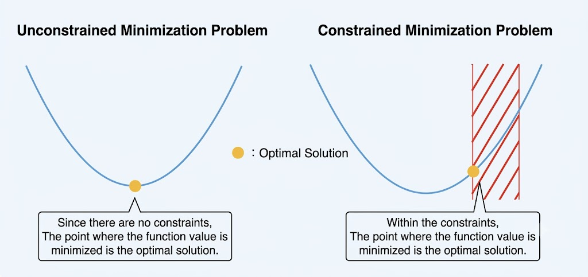
-
또는
- 단, 가 가질 수 있는 Constraint가 없음
-
-
: Graident
-
Feasible Canadidate를 찾기 위한 수식식
-
-
Constrained Optimization
-
Objective Function과 Constraint가 모두 있는 경우에 최적값을 찾는 문제
- 또는
- : such that. 조건
- 또는
-
Constraint
-
Equality Constraints
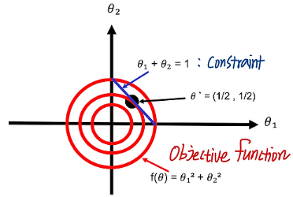
직선과 접해야 함-
으로 나타낼 수 있는
-
Equality Constraint를 만족하는 해들 중, Objective Function의 Optimal Solution을 계산하는 방법이 Lagrange Multiplier
| 참고 : Lagrange Multiplier -
에 의해 영역이 제한되므로 최적점이 반드시 에 있는 것은 아님
-
2변수 이상의 Objective Function에서 Gradient 구하기
- 는 어떤 점 에서 등위집합(또는 접공간)에 수직인 Vector
-
등위선 (Level Curve)
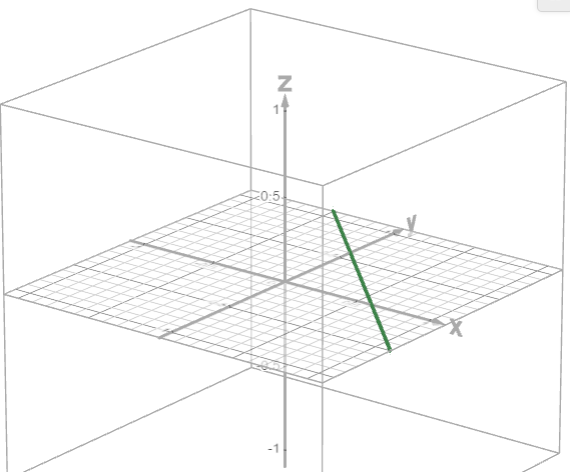
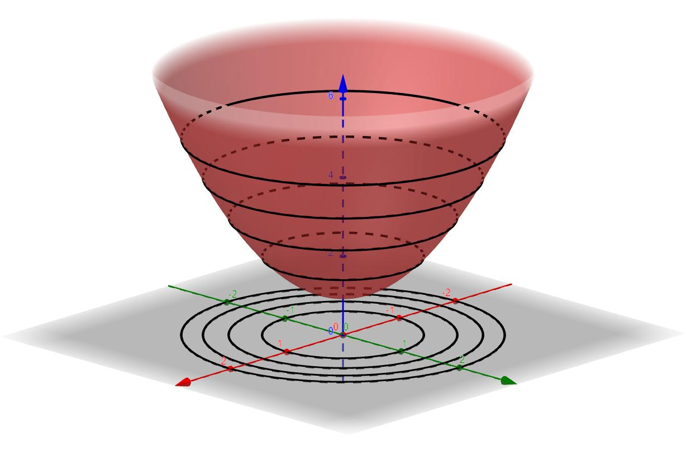
- 2변수 함수에서 같은 함수값을 갖는 점들의 집합
- 즉, 를 만족하는 값들의 집합
- 단, 형태는 상관 없음
- 2변수 함수에서 같은 함수값을 갖는 점들의 집합
-
등위면 (Level Surface)
- 3변수 함수에서 같은 함수값을 갖는 점을 이은 면
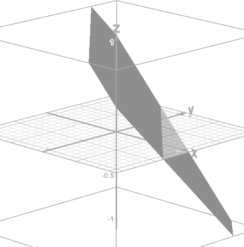
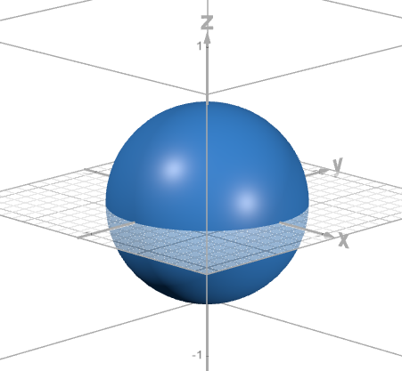
- 즉, 를 만족하는 값들의 집합
- 단,형태는 상관 없음
- 3변수 함수에서 같은 함수값을 갖는 점을 이은 면
-
등위집합 (Level Set)
- n변수 함수에서 같은 함수값을 갖는 점을 이은 표현
-
조건
- 단, 에서 라는 등위선등위면등위집합이 있어야 함
-
- 는 어떤 점 에서 등위집합(또는 접공간)에 수직인 Vector
-
-
Inequality Constraints
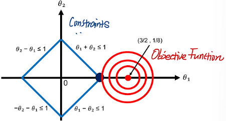
마름모 영역 내 모든 범위에 해는 모두 유효함
- Regularity Conditions (Constraint Qualifications)
- (추후 작성)
-
Convex Optimization
- Convex Function을 Convex Set 위에서 최소화하는 최적화 문제
-
- : 최적화할 Variable
- : Objective Function
- : Inequality Constraint
- : Equality Constaint
-
Convex
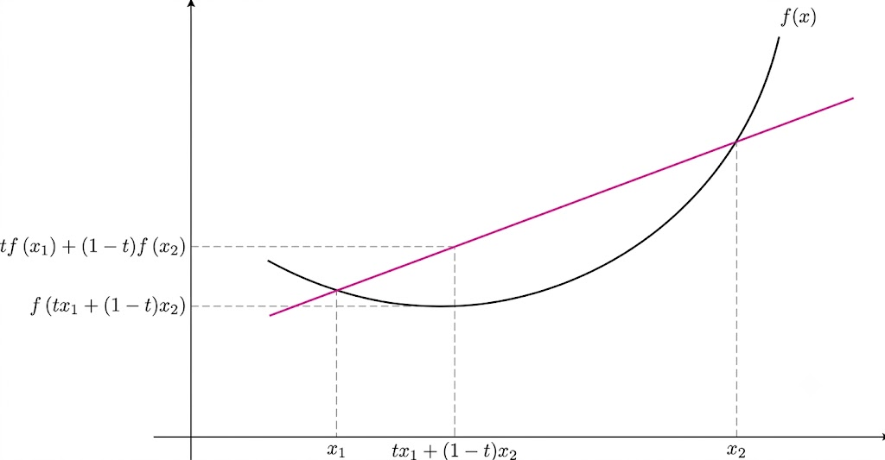
-
함수 위의 임의의 두 점 , 와 사이 값 에 대해 다음 식이 항상 성립하는 경우
-
-
Non Convex
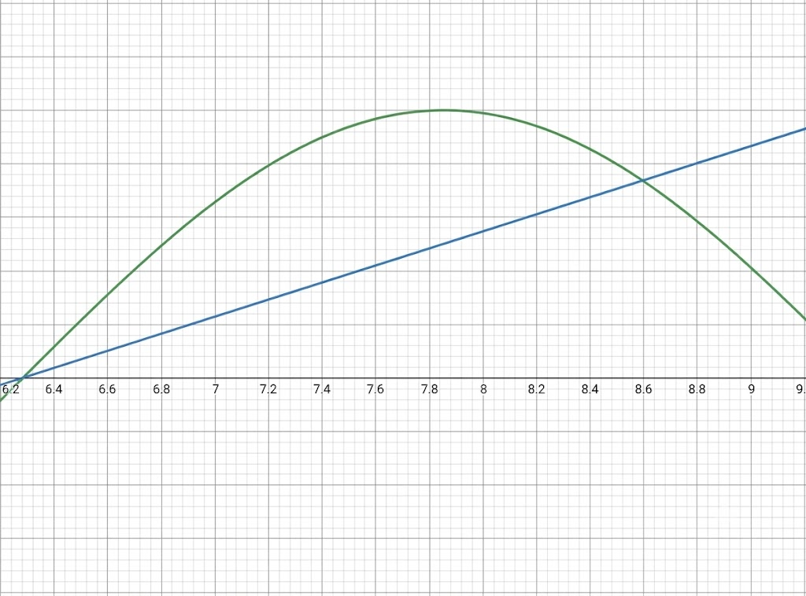
-
-
Convex Function
- 아래로 볼록한 함수
-
Convex Set
- 집합 안의 어떤 두 점을 선택하더라도, 두 점을 잇는 선분 전체가 집합 안에 포함되는 집합
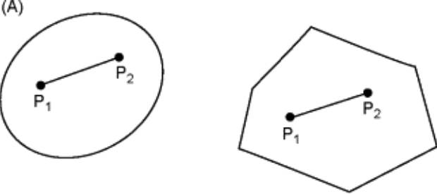
(A) Convex Set
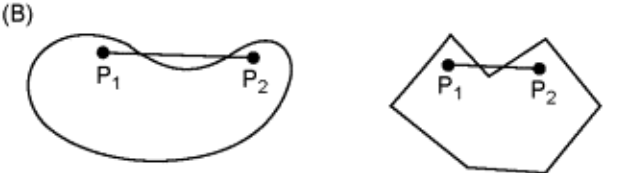
(B) Non-convex Set - 에 대한 를 만족해야 함
- : 집합 에 속하는 모든 에 대해
- 집합 안의 어떤 두 점을 선택하더라도, 두 점을 잇는 선분 전체가 집합 안에 포함되는 집합
-
Convexity
- 어떤 대상이 Convex한 성질을 가지는지 나타내는 개념
- Convexity를 만족함 → Convex
- Convextity를 만족하지 않음 → Non-Convex
- 어떤 대상이 Convex한 성질을 가지는지 나타내는 개념
-
Convexity and DeepLearing
-
Gradient Descent를 사용할 때,
Convex Function과Non-Convex Function에서 탐색한 해는 큰 차이를 가짐
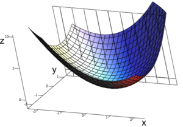
Convex Function -
Convex Function에서, Gradient Descent를 통해 찾는 최저점이 단 하나 존재함.
- 이를
Global Minimum이라고 함
- 이를
-
Non-Convex Funtion에선 무한이 넓은 함수 공간에서, 여러 곳의
Local Minima를 가짐- 따라서, 어느 곳이
Global Minimum인지 알 수 없음AdaGrad,RMSprop등 Optimizer가 연구됨
- 따라서, 어느 곳이
-
-
Convex Set and DeepLearning-
Convex Set을 분리할 수 있는
Hyperplane이 존재함-
Hyperplane
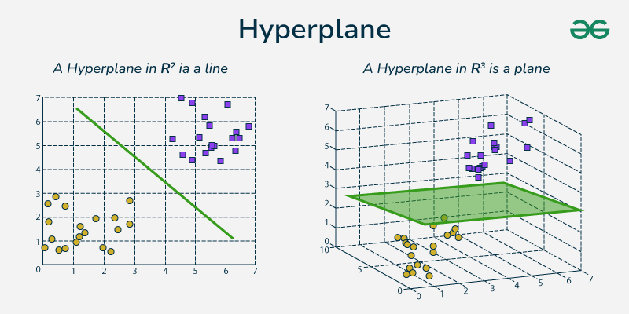
2차원에서 Hyperplane은 직선, 3차원에서 Hyperplane은 평면- 차원 공간을 2개의 부분으로 나누는 차원 공간 경계
- 분리된 공간은 여전히 차원
-
단,
Hyperplane을 찾기 매우 어려움
-
-
Perceptron과SVM을 비롯한 MachineLearning은 Convex Set을 올바르게 분리하는Hyperplane을 찾는 수학적 모델 -
DNN, DeepLearning의 장점
- Layer를 한 계층씩 늘릴 때마다, Neural Network가 표현할 수 있는 Data의 Axis가 하나씩 추가되는 효과를 가짐
- 고차원 공간의 Data Point는 저차원 공간에 비해 Axis 축의 수가 많아져서,
Linear Separability확률이 높아짐Linear Separability: 선형적으로 분리할 수 있는 가능성
-
-
Optimizer
Loss Function의 기울기 정보를 바탕으로 모델의Weight,Bias를 조정하는 알고리즘Loss를 최소화해 모델의 예측 성능을 높이는 것이 목표
SGD
-
확률적 경사하강법
-
각 가중치에 대한
Loss Function의 기울기를 계산하고, 기울기의 반대 방향으로 가중치 업데이트 -
구현
torch.optim.SGD(model.parameters(), lr=learning_rate)
Momentum
-
이전 가중치 업데이트 방향을 반영하는
SGD의 변형 -
Loss Function의 수렴을 가속화 시키고,Local minima에 빠지지 않게 함 -
구현
torch.optim.SGD(model.paremeters(), lr=learning_rate, momentum=0.9)
Adam
-
AdaGrad와RMSProp의 장점을 결합한 최적화 알고리즘 -
과거의 기울기 정보를 활용해 각
Parameter의Learning rate를 개별 조정 -
자주 사용되는 최적화 알고리즘
-
구현
torch.optim.Adam(model.parameters(), lr=learning_rate)
RMSProp
-
기울기 제곱값의 이동 평균을 계산한 뒤, 현재 기울기를 해당 평균의 제곱근으로 나눠 파라미터 업데이트
-
구현
torch.optim.RMSprop(model.parameters(), lr=learning_rate)